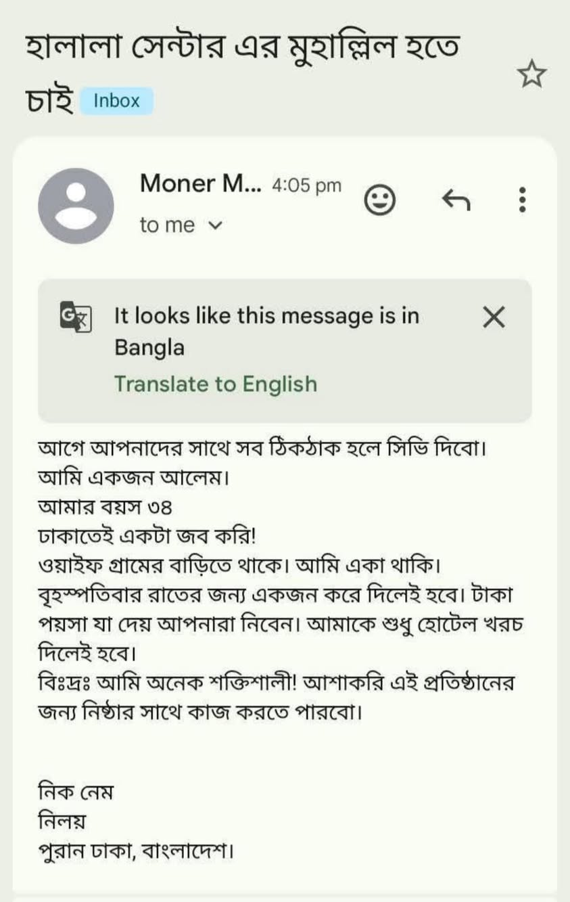

যে হিল্লা বিয়ে করে নাবি আলাইসিস সালাম তাকে ভাড়াটে পাঁঠা আখ্যা দিয়েছেন। [মুসতাদরাক…
৯ জুন, ২০২৬
যে হিল্লা বিয়ে করে নাবি আলাইসিস সালাম তাকে ভাড়াটে পাঁঠা আখ্যা দিয়েছেন। [মুসতাদরাক হাকিম— 2841] সনদ: সহিহ লি গাইরিহি
উমর রা. বলেন, "আমার নিকট যদি এমন কাউকে নিয়ে আসা হয়, যে হিল্লা বিয়ে করেছে এবং যার জন্য হিল্লা করা হয়েছে— তবে আমি তাদের উভয়কে রজম করব অর্থাৎ পাথর ছুড়ে মৃত্যুদণ্ড দেব।" [ইবনু আবি শাইবা— ১৭৩৬৩] সনদ: সহিহ
যে হিল্লা বিয়ে করে নাবি আলাইসিস সালাম তাকে ভাড়াটে পাঁঠা আখ্যা দিয়েছেন। [মুসতাদরাক হাকিম— 2841] সনদ: সহিহ লি গাইরিহি
উমর রা. বলেন, "আমার নিকট যদি এমন কাউকে নিয়ে আসা হয়, যে হিল্লা বিয়ে করেছে এবং যার জন্য হিল্লা করা হয়েছে— তবে আমি তাদের উভয়কে রজম করব অর্থাৎ পাথর ছুড়ে মৃত্যুদণ্ড দেব।" [ইবনু আবি শাইবা— ১৭৩৬৩] সনদ: সহিহ
